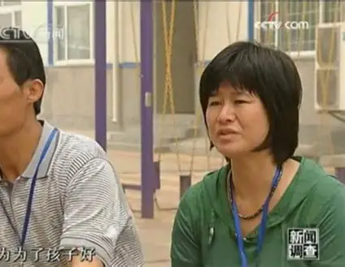
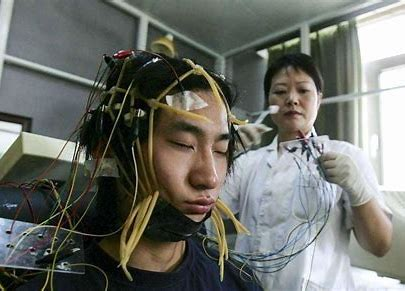

<!DOCTYPE html>
<html lang="en">

<head>
    <meta charset="UTF-8">
    <meta name="viewport" content="width=device-width, initial-scale=1.0">
    <title>HOME</title>
    <link rel="stylesheet" href="index.css">
    </link>
</head>

<body>
    <div class="content">

        <div class="con_box">
            <div class="con con1">
                <div class="line"></div>
                <div class="con1_text">
                    <h1>
                        <span class="span1">“Parents”</span>
                        <br>
                        <span class="span2">signature,</span>
                        <br>
                        <span class="span3">“children’s”</span>
                        <br>
                        <span class="span4">shock.</span>
                    </h1>
                </div>
                <div class="con1_img">
                    </img>
                </div>
            </div>
            <div class="con con2">
                <div class="line"></div>
                <div class="con2_1">
                    The thought of becoming a parent
                    without taking a test is terrifying.
                </div>
                <div class="con2_2">
                    —Kotaro Isaka
                </div>
            </div>

            <div class="con con3">
                <div class="line"></div>
                <div class="con3_con">
                    <div>
                        Parents saved by Yang Yongxin
                        <br>
                        I kept finding documents from parents
                        at internet addiction treatment centers.
                        I found them filled with anger, and
                        most refused to speak with the media.
                        From the vast archive, I identified a
                        few parents willing to speak. For this
                        article, the media outlet interviewed
                        a mother in Shanghai. By sifting
                        through valuable, never-before-seen
                        information, I attempt to reconstruct
                        the image of these parents through
                        this article.
                        <div class="text_line"></div>
                    </div>
                    <div>
                        
                    </div>
                </div>
            </div>

            <div class="con con4">
                <div class="con4_con">
                    <div class="con4_1">
                        <h2>Game developers are producing opium</h2>
                        In 2017, after publishing articles like "People Fighting Yang Yongxin," the media outlet received
                        countless
                        calls from parents who had sent their children to internet addiction treatment centers and sincerely
                        believed
                        they had been "cured" by Yang.
                        <br>
                        Often, when describing Yang Yongxin, the centers, and the individuals sent there, the image of the
                        "parents"
                        is often thin. They appear to be foolish and ignorant, vulgar and cruel, Yang Yongxin's accomplices,
                        harming
                        both their children and themselves.
                        <div class="text_line"></div>
                    </div>
                    <div class="con4_2">
                        
<!--                        <h2>Game developers are producing opium</h2>-->
                    </div>
                </div>

            </div>
            <div class="con con5">
                <div class="line"></div>
                <div class="con5_left">
                    Three years ago, 14-year-old Xiao Tang was in the first
                    year of junior high. When he was in fifth grade, his
                    parents divorced, and Xiao Tang had been living with
                    his father, Tang Xueli, for the past two years. One day,
                    Tang Xueli came home from get off work and heard "a
                    very piercing sound" as he opened the door. He went
                    into the child's room, where Xiao Tang was watching a
                    livestream (or perhaps a cartoon; during the interview,
                    Tang Xueli couldn't tell the difference). Tang Xueli felt
                    as if he "heard a mournful melody." He accused Xiao
                    Tang, "What you're hearing is like what a dead person
                    would hear." Tang Xueli said that Xiao Tang then
                    "became a demon." Xiao Tang began smashing things
                    like crazy, first the table, then the bench, and finally the
                    TV in the living room. Unable to stop him, Tang Xueli
                    retreated to his room. He later tried to reconcile with the
                    child, but to no avail. That same night, Tang Xueli was
                    awakened by a loud bang. Xiao Tang smashed down his
                    door with a bench
                    <div class="con5_line"></div>
                </div>
            </div>

            <div class="con con6">
                <div class="con6_left">
                    Tang Xueli admitted, "The child's current situation
                    is definitely related to the divorce and his mother's
                    departure." One day, when he came home from get off
                    work, he found Xiao Tang crying in the room. Xiao Tang
                    told his father, "At school, my classmates look down on
                    me because I don't have a mother." Tang Xueli told me
                    that a significant number of children at the Linyi Internet
                    Addiction Treatment Center are troubled by their parents'
                    divorce and remarriage.
                    Tang Xueli declined to share the reasons for his divorce,
                    saying it was "too complicated to explain." He admitted he
                    couldn't control his son. Tang Xueli described how Xiao
                    Tang would play computer games until midnight every
                    day. He urged his son to go to bed, but "his son got angry
                    and started smashing things," eventually smashing the TV.
                    <div class="text_line"></div>
                </div>
                <div class="con6_right">
                    
                </div>
            </div>

            <div class="con con7">
                <div class="con7_con">
                    <div class="con7_text">
                        Tang Xueli ultimately decided to send his son to
                        the Linyi Internet Addiction Treatment Center. A
                        native of Linyi, he had a relative who worked at
                        the center, and he " "I've known the center since
                        its opening." Tang Xueli knew Xiao Tang would
                        definitely refuse, so he lied and said he was going
                        to buy a computer. With the help of the center staff,
                        his child "couldn't leave once he got there."
                        <div class="text_line"></div>
                    </div>
                    <div></div>
                    <div></div>
                    <div class="con7_text">
                        Tang Xueli said the center housed over 100 children
                        at the time. Besides those addicted to gaming, there
                        were also those who got into fights and those who
                        didn't attend school. Many, like Xiao Tang, were
                        admitted for "watching cartoons." The most serious
                        cases were for "drug trafficking and prostitution."
                        I asked Tang Xueli, "Why are drug dealers and
                        prostitutes under the jurisdiction of the Internet
                        Addiction Center?" He hesitated, saying, "Besides
                        murderers and arsonists, there are all kinds of
                        children here. It's a place where problem children
                        gather."
                        <div class="text_line"></div>
                    </div>
                </div>
            </div>


            <div class="con con8">
                <div class="line"></div>
                <div class="con8_left">
                    
                </div>
                <div class="con8_right">
                    I give you a brand new Auschwitz, <br>
                    I give you a hell of exquisite craftsmanship,<br>
                    I give you a plump, juicy body.<br>
                    I'll lift off your skull and steal your tender
                    pink brain.<br>
                    I'll dig out your intestines, a vibrant red, a
                    lovely sight.<br>
                    Green flies glitter and shine brightly on your
                    rotting body.<br>
                    I'll roast a fresh piece of brain for you.<br>
                    I'll roast a fresh heart for you.<br>
                    I'll put makeup on you,<br>
                    covering the tiny specks of corpse stain.<br>
                    I'll help you eliminate what you won't need
                    in the future.<br>
                    You'll take flight on the runway.<br>
                    Speak, child. Mom and Dad love you.<br>
                    Speak, child. We are raising you to be a
                    successful person.<br>
                    Speak, child. You love us.<br>
                    Speak, child. You love the world. <br>
                    <div class="text_line"></div>
                </div>
            </div>

            <div class="con con9">
                <div class="con9_con">
                    <div>
                        
                    </div>
                    <div class="con9_text">
                        <p>
                            No parent believes they don't love their child, and
                            even fewer are willing to admit they've made foolish
                            mistakes with their child.
                        </p>
                        <br>
                        <p>
                            The reason Yang Yongxin has been able to perpetrate
                            evil in China under the guise of a doctor for nearly a
                            decade without failing is thanks to the commitment
                            Chinese parents place on their children's development.
                            Most Chinese parents want their children to be wellbehaved, obedient, and sensible, and they
                            consider
                            obedience a supreme virtue, even if the parents
                            themselves are jerkish.
                        </p>
                        <br>
                        <p>
                            When a child in a family develops internet addiction,
                            many parents' first reaction is that the child is willful
                            and rebellious, refusing to listen to adults. However,
                            during this process, parents rarely reflect on whether
                            they truly care about their child's psychological
                            development or whether they have established equal
                            and trusting communication with them. Not to
                            mention, many parents themselves have numerous
                            bad habits.
                        </p>
                        <div class="text_line"></div>
                    </div>
                    <div>
                        
                    </div>
                </div>
            </div>
        </div>

    </div>


    <script>
        let conIndex = 0
        let con_box = document.querySelector('.con_box');
        con_box.style.transform = `translateY(${conIndex * -100}vh)`;

        // 改进的节流函数
        function throttle(func, delay) {
            let timeoutId;
            let lastExecTime = 0;
            return function (...args) {
                const currentTime = Date.now();

                // 清除之前的定时器
                if (timeoutId) {
                    clearTimeout(timeoutId);
                }

                // 如果距离上次执行时间超过延迟时间，则立即执行
                console.log(currentTime, lastExecTime);
                if (currentTime - lastExecTime >= delay) {
                    func.apply(this, args);
                    lastExecTime = currentTime;
                } else {
                    // 否则设置定时器，在延迟时间后执行
                    // timeoutId = setTimeout(() => {
                    //     func.apply(this, args);
                    //     lastExecTime = Date.now();
                    // }, delay - (currentTime - lastExecTime));
                }
            };
        }

        // 滚动处理函数
        function handleScroll(direction) {
            console.log(`用户正在${direction === 'down' ? '向下' : '向上'}滚动`);
            if (direction === 'down') {
                if (conIndex < 8) {
                    conIndex++
                }

            } else {
                if (conIndex > 0) {
                    conIndex--
                }

            }
            console.log(conIndex);
            con_box.style.transform = `translateY(${conIndex * -100}vh)`;
            // 在这里添加你的滚动处理逻辑
        }

        // 鼠标滚轮事件处理函数
        function onMouseWheel(event) {
            // 判断滚动方向
            if (event.deltaY > 0) {
                // 向下滚动
                handleScroll('down');
            } else if (event.deltaY < 0) {
                // 向上滚动
                handleScroll('up');
            }
        }

        // 使用节流处理鼠标滚轮事件，每100毫秒最多执行一次
        const throttledMouseWheel = throttle(onMouseWheel, 500);

        // 监听鼠标滚轮事件
        window.addEventListener('mousewheel', throttledMouseWheel);
    </script>
</body>

</html>